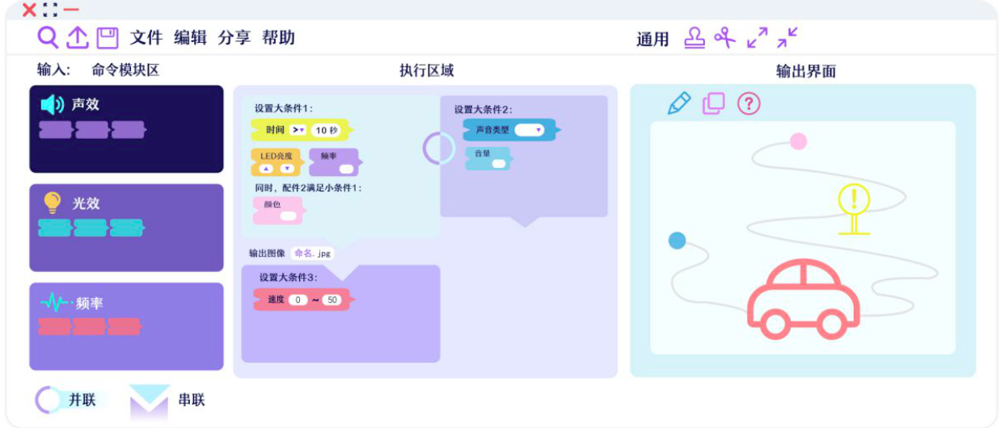

Date:2019-09-12
Use software: Adobe Photoshop
Adobe Illustrator
Visual programming design
Software: the microcontroller socket can be co-
nnected to the PC side, by the command mod-
ule, the execution area, the output interface.
(1) Command Module (2) Execution Zone
(3) Out-
put interface (analog) / accessory movement
（4）Pure computer mapping, animation inte-
rface: there are many function keys

Hardware: The microcontroller can be inserted into multiple square module transinterfaces, t-
he top of the module is distinguished by icons, and the sensor or accessory interface can be a-
dded by individual needs. One interface can c-
onnect multiple sensors and the right side co-
nnects the corresponding output accessory.
The top of the microcontroller has a total swi-
tch button, each square module has a local sw-
itch, the program runs wrong when the red lig-
ht, when not used do not need to unplug from
the microcontroller, can use a function alone.